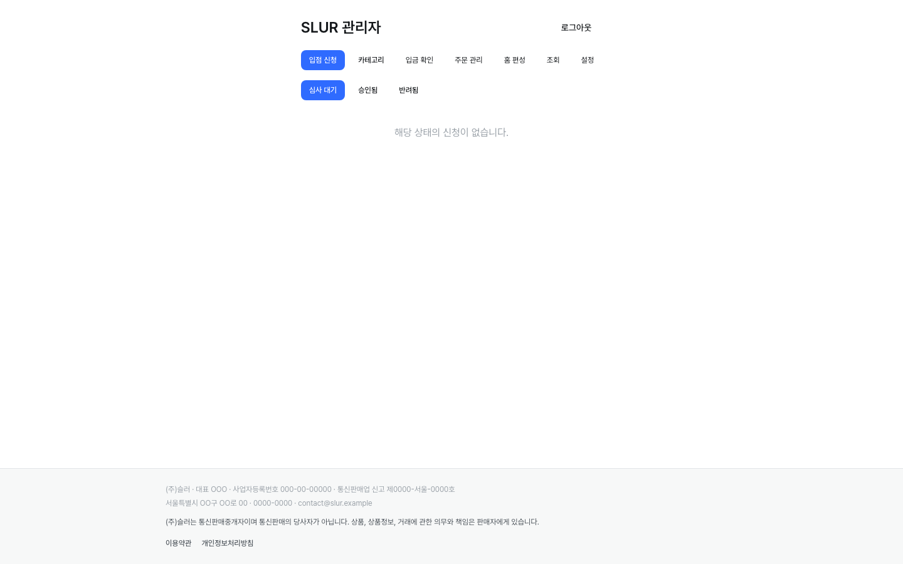
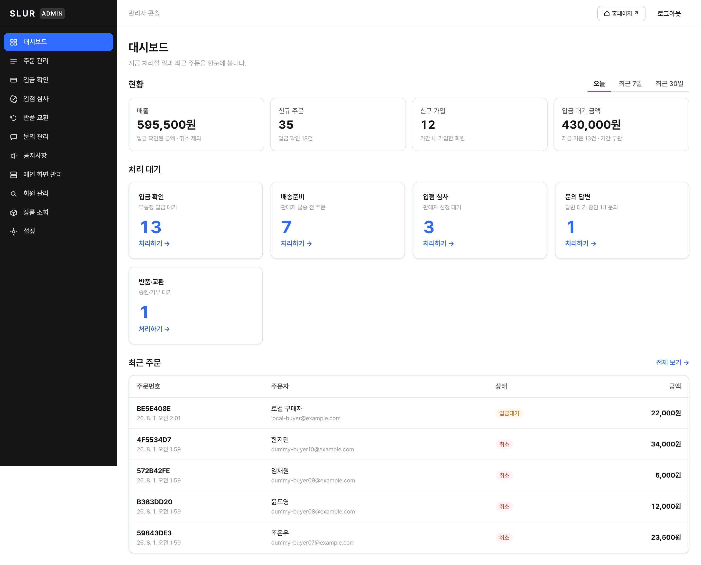
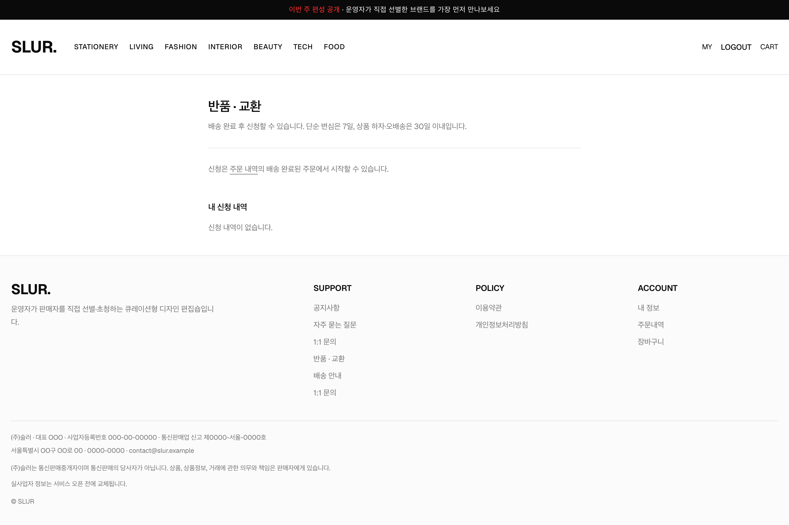
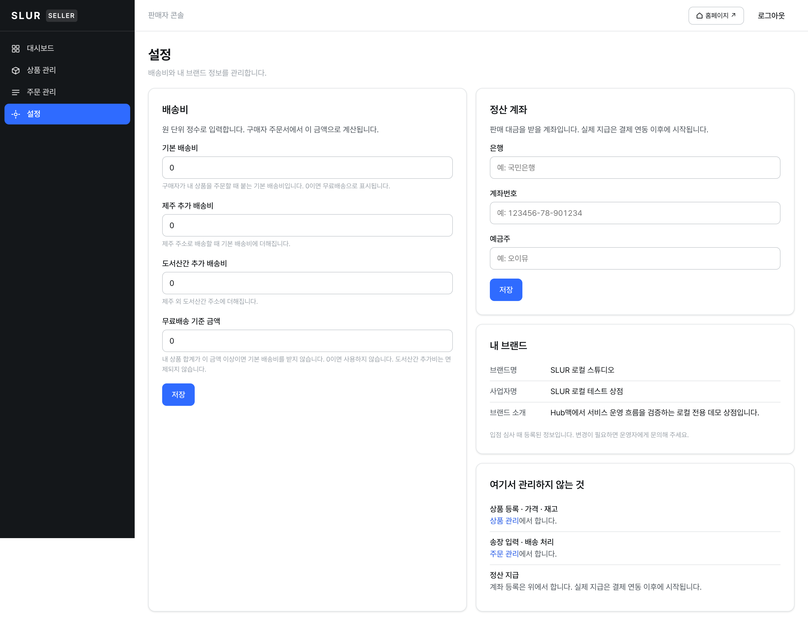

SLUR PLATFORM BLUEPRINT
피드백 반영 결과 보고 · 2026년 8월 1일
2026년 7월 28일 오후 4시
그래서 두 방향으로 진행했습니다.
7월 28일 → 8월 1일 (4일간)
| 영역 | 7월 28일 | 지금 |
|---|---|---|
| 관리자 화면 | 8 | 11 |
| 판매자 화면 | 4 | 5 (+상품 수정) |
| 구매자 화면 | 8 | 11 |
| 법적 요건 대응 | 0 / 3 | 3 / 3 |
| 표준 커머스 구조 (P0·P1) | 0 / 10 | 10 / 10 |
없으면 손님을 받을 수 없는 항목입니다
| 항목 | 없을 때 무슨 일이 | 지금 |
|---|---|---|
| 약관 동의 기록 | 동의를 받아도 기록이 남지 않았습니다. 분쟁 시 “동의했다”를 증명할 방법이 없고, 이미 가입한 사람은 소급이 불가능합니다. | 해결 |
| 1:1 문의 | 손님이 연락할 수단이 전화번호뿐이었습니다. 중개자는 불만·분쟁 처리 창구를 두는 게 법적 의무이고, “책임은 판매자에게” 고지도 이 창구가 있어야 성립합니다. | 해결 |
| 공지사항 | 약관을 바꾸면 7일 전에 알려야 하는데(불리한 변경은 30일) 알릴 지면이 없었습니다. | 해결 |
진단 문서의 P0·P1 목록 — 10개 전부 해소
| 항목 | 7월 28일 상태 | 지금 |
|---|---|---|
| 반품·교환 | 배송 전 취소만 가능 — 배송 후 반품을 받을 자리가 없었음(법정 의무 미대응) | 해결 |
| 결제·환불 기록 | 환불 금액을 저장할 칸이 없었음 — “얼마 돌려줬나”에 답 불가 | 해결 |
| 주문번호 | ID 앞 8자리를 잘라 씀 — 중복 방지 없음. PG가 요구하는 조건 미충족 | 해결 |
| 배송지 주소록 | 재주문마다 이름·전화·주소 전부 재입력 | 해결 |
| 조건부 무료배송 | “N원 이상 무료”를 설정할 자리 없음 | 해결 |
| 분할배송 | 송장이 1개뿐 — 2박스로 보내면 덮어써야 함 | 해결 |
| 재고 이력 | “왜 재고가 3인가”에 답할 수 없었음 | 해결 |
| 상품 관리코드(SKU) | 택배·정산 대조용 키 없음 | 해결 |
| 판매자 정산 계좌 | 대금을 넘길 계좌를 받을 칸조차 없음 | 해결 |
| 약관 동의 이력 | 기록 0건 | 해결 |
“지금 무엇을 처리할까”에 답하는 화면으로


주문 이후의 흐름이 채워졌습니다


실제로 한 바퀴 돌려 검증한 결과입니다
| 단계 | 결과 |
|---|---|
| 가입 | 약관 동의 2건 기록 (이용약관·개인정보처리방침 v1.0) |
| 주문 | 주문번호 발급 · 무료배송 기준 적용 (12,000원 → 배송비 3,000원 / 24,000원 → 0원) |
| 입금 확인 | 결제 원장에 24,000원 기록 |
| 반품 완료 | 환불 12,000원 기록 |
| 최종 | 받은 24,000 − 환불 12,000 = 실수령 12,000원 |
솔직한 평가
7월 28일에는 MVP가 맞았습니다.
지금은 결제만 붙이면 문을 열 수 있는 상태입니다.